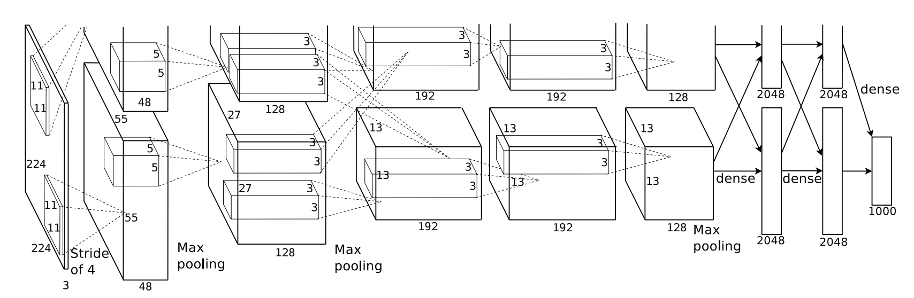

Devanagari Character Recognition
Jonathan Axmann, Chris Collins, Mihir Shrirang JoshiFall 2018 CS 4803 / 7643 Deep Learning: Class Project
Georgia Tech
Abstract
We attempt to perform image classification on the Devanagari character set. For an input of handwritten Devanagari symbols, our model will output the category label (character name) of each character. We will use a variety of models, including a small fully-connected net with two layers, a simple convolutional net with one convlutional layer, and more complex models, as well as pretrained-models, and compare performance.Teaser figure
A figure that conveys the main idea behind the project or the main application being addressed. (This one is from AlexNet.)

Introduction / Background / Motivation
What did you try to do? What problem did you try to solve? Articulate your objectives using absolutely no jargon.
Initially, our project aimed to solve the problem of classifying Devanagari script.Devanagari is an Indic script used in India and Nepal, and our dataset contains 36 characters and 10 digits. It is differentiable from many other written languages by the lack of capitalization and the horizontal bar aligned along the top of the script.
Our training dataset contains 200 examples of each character, for a total of 92,000 images. Each image consists of 32x32 pixels, and 3 color channels.
How is it done today, and what are the limits of current practice?
Current attempts to classify Devanagari script are outlined here:- https://towardsdatascience.com/devanagari-script-character-recognition-using-machine-learning-6006b40fa6a9
This project uses Random Forests (but not deep learning) to classify handwritten Devanagari script. It achieves a maximum accuracy score of 92%. - https://www.hindawi.com/journals/cin/2018/6747098/
This project uses VGG, ResNet, DenseNet, and others to achieve 98% accuracy on the given data set.
Who cares? If you are successful, what difference will it make?
The goal of our project is to achieve comparable accuracy to the models used in the paper above, but using a simpler model. Ideally, simply tuning hyperparameters and using smart design decisions will allow us to achieve high accuracy with a less complex model (or a pre-trained model) to reduce overall training time. Our approach could be useful to apply to character recognition tasks when there are limited resources to train on. The paper above trains each model on 250 epochs to achieve a best-accuracy of 98%. We will limit our maximum training epochs to 25, and see how competitive our accuracy will be.Approach
What did you do exactly? How did you solve the problem? Why did you think it would be successful? Is anything new in your approach?
We tried a variety of models, including a simple two-layer fully-connected net, a simple convolutional net, a modified variant of VGG11 (using different input sizes and additional max-pooling layers), a pre-trained AlexNet, a fully-trained VGG11, and more. Our approach was to first use simple models to make sure the data was formatted correctly and that our approach would work at all, as a sanity check.What problems did you anticipate? What problems did you encounter? Did the very first thing you tried work?
One problem that we faced was having to change the input sizes to some of the pre-trained networks. VGG11, for instance, takes a 224x224x3 image as input, and our images are only 32x32. It's possible to work around this problem by simply resizing the images for the pre-trained models. For fully-trained VGG11, however, it is not feasible to use 224x224x3 images since the memory usage is extremely high. For this reason, we created a VGG11-variant that accepted 32x32x3 input images and still achieved high accuracy.Experiments and Results
How did you measure success? What experiments were used? What were the results, both quantitative and qualitative? Did you succeed? Did you fail? Why?
Nemo enim ipsam voluptatem quia voluptas sit aspernatur aut odit aut fugit, sed quia consequuntur magni dolores eos qui ratione voluptatem sequi nesciunt.
FC with Softmax Classifier
Two layer FC
Single convolutional layer with 224x224x3 input images
Single convolutional layer with 32x32x3 input images
Pre-trained alexnet
Fully-trained VGG11 with 32x32x3 input images over 10 epochs
Fully-trained VGG11 with 32x32x3 input images over 15 epochs
Poor recall for ktop=15
Poor recall for ktop=15
Poor recall for ktop=15

|
Poor recall for ktop=15